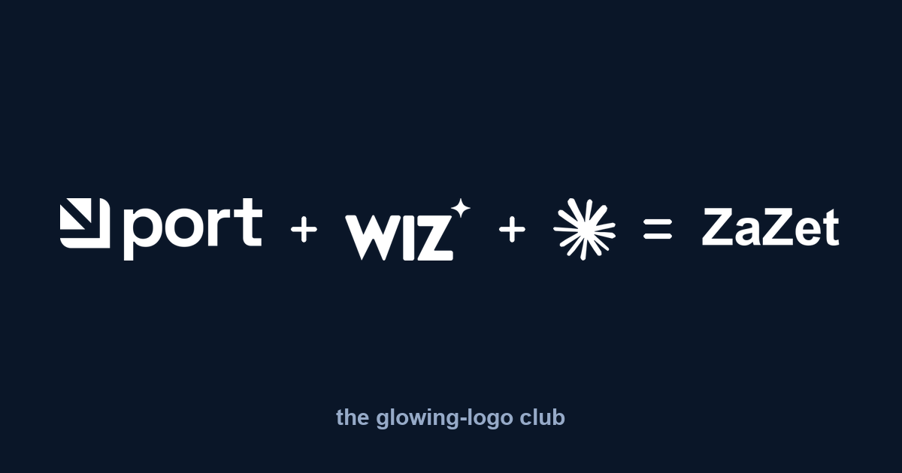
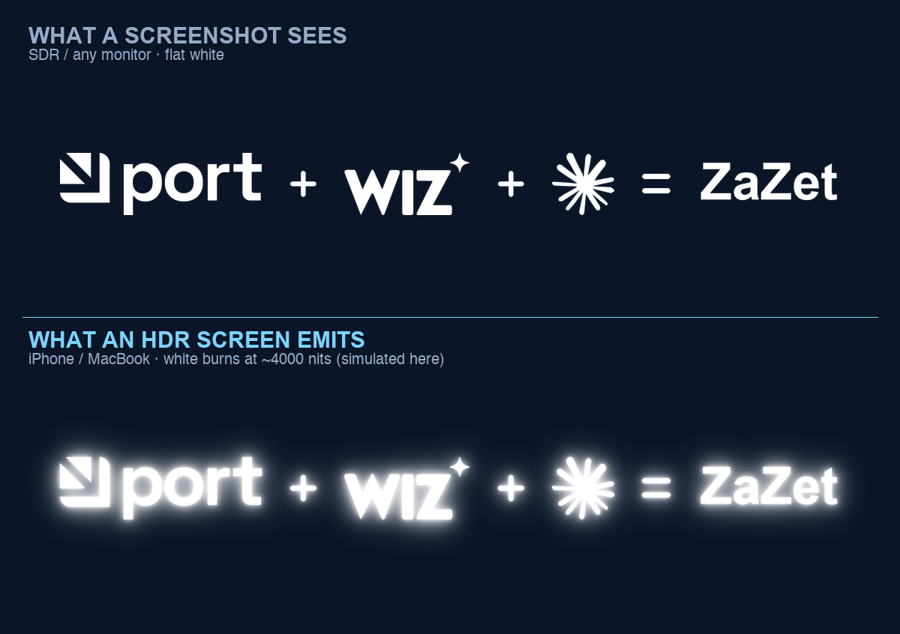

HDR · Attention · Reverse-engineering
The logo that burned a hole in my feed
I scrolled past a logo that was physically brighter than the screen around it. Not "bright" — emitting light, like a bulb behind the glass. I sat down for an hour to figure out how, rebuilt it, and packaged it into one command and a Claude skill. This is the how — and the half of the story nobody tells.

What I saw
I was scrolling LinkedIn when the Wiz logo lit up. Everything else in the feed looked normal, and it was burning. I genuinely thought my screen was broken. So I downloaded the logo file and pulled it apart. No filter, no glow, no animation — a completely flat image. But buried inside was one unusual thing: a colour profile named “Rec2020 Gamut with PQ Transfer.”
That's an HDR profile — the same PQ (SMPTE ST 2084) curve used by Dolby Vision films, which can encode brightness up to 10,000 nits. And that's the whole trick.
The physics of the trick
By my read of the file, the background is encoded at roughly 60 nits — so it stays dark and muted. But the white letters? They decode to 4,000 nits and up — around 20× the ~200-nit white your screen renders for everything else. So the letters simply burn above the rest of the interface.
On any HDR screen — every modern iPhone and MacBook — the logo emits more light than LinkedIn's own white UI. Your eye cannot not go there. It even hurts a little, and that's exactly why you can't ignore it. The best part: in a screenshot, or on a normal screen, it looks like a dull, boring purple. The magic only exists live, on the right hardware — so almost nobody notices what is happening. They just feel the logo grabbing them.

Engineers think about performance. Designers think about aesthetics. Someone at Wiz thought about the physics of light — and went around both.
I rebuilt it
It took an hour, but I reproduced it — then turned it into a tiny tool and an installable skill, so you don't need the hour. The mechanism, in code, is small: tag a PNG with a cICP chunk declaring BT.2020 primaries + PQ transfer, strip the colour tags that would contradict it, and rescale the pixel values so white lands on a brightness you choose (the calibration knob — 10,000 nits clips and sears the eye, so the default is a saner 1,000).
# make any logo glow — one command
python3 hdr_glow.py your-logo.png your-logo-hdr.png --nits 4000
# verify the HDR tag actually landed
ffprobe -show_entries stream=color_transfer,color_primaries your-logo-hdr.png
# -> color_transfer=smpte2084 color_primaries=bt2020Upload the output as a company / brand-page logo — personal profile photos get re-encoded by LinkedIn and lose the effect; page logos pass through untouched. The image at the top of this post is my own reproduction: Port + Wiz + Claude = ZaZet, every mark in white so the whole equation burns together. Open the HDR file on an iPhone or Mac and watch it light up.
{kind=link}
Credit where it's due
I didn't invent this — I reverse-engineered it. The comments on my post were quick and right to point out the lineage, and they deserve the credit:
- Port.io shipped it before Wiz, and it circulated on Reddit for months. Slack had it too — and has already patched theirs.
- dtinth/superwhite — the reference implementation, built to degrade gracefully across screens.
- hdr-shnitz.vercel.app — a browser tool by Nitzan Yogev that does the conversion with no code.
My repo is just a dependency-light CLI plus a Claude skill, so it drops into an automated workflow. Same idea, different packaging.
The catch — read this before you ship it
Which is the real lesson: the "genius" move bets on the viewer's hardware. Half the feed gets a glow; the other half gets a bug. Use it knowing that.
FAQ
How do you make a logo glow on LinkedIn?
Tag the image with an HDR colour profile - BT.2020 primaries and a PQ (SMPTE ST 2084) transfer curve, written as a PNG cICP chunk - so its white pixels decode at thousands of nits and outshine the feed. Upload it as a company / brand-page logo (personal profile photos get re-encoded and lose it). Open-source one-command tool: github.com/tatarco/hdr-glow-logo.
Why does the Wiz logo look brighter than the whole screen?
Its white pixels are encoded on the PQ HDR curve to around 4,000 nits, while your screen shows normal white at roughly 200 nits. On an HDR display the logo literally emits more light than the surrounding interface.
Why does the glowing logo look broken or smeared on my monitor?
On non-HDR screens - many Windows and Dell monitors - the same file can render smeared or low-resolution, like a malfunction. The effect only works on HDR hardware such as modern iPhones and MacBooks; everyone else may see the inverse.
Does the trick work in a screenshot or on any screen?
No. It only appears live on HDR hardware. In a screenshot or on an SDR monitor it looks like a flat, dull image, and platforms patch it over time - Slack already has.
Get the code + skill
Open source (MIT), Python + one dependency. One command:
git clone https://github.com/tatarco/hdr-glow-logo
cd hdr-glow-logo && pip install pillow
python3 hdr_glow.py your-logo.png your-logo-hdr.png --nits 4000